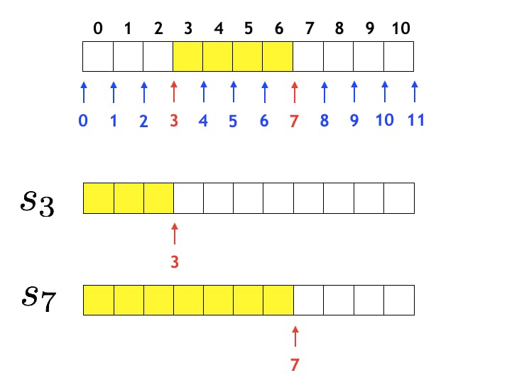

素晴らしいアルゴリズムの世界
Tweetどうも、中3の副部長の中野です。最近、僕の周りで競技プログラミングが流行っているので、少しアルゴリズムについて書こうかなと思います。
対象読者
C++などのプログラミング言語の基礎をある程度抑えている人。
競技プログラミングとは
競技プログラミング(以下競プロ)とは、数学的な問題を制限時間内にプログラミングで回答する競技です。有名な競技プログラミングのプラットフォームとして、AtCoderが挙げられますが、問題文が日本語なので初心者でも比較的始めやすいと思います。何より代表のchokudaiさんが面白いです。
累積和
これは競プロだったら頻出のアルゴリズムですね。次のよな問題を考えてみてください。
個のクエリと長さの数列 が与えられる。また各クエリでは が与えられる。各クエリにて、数列における区間 の総和を求めよ。
このような問題は、ある程度プログラミングができる人なら、各クエリで から までのfor文を使って合計を求めて、それを出力して・・・と考えるかと思います。しかし、クエリの数や、 の範囲が今回の成約のように膨大になってしまった場合、到底制限時間内に間に合いません(計算量が のためTLE=時間制限超えになってしまいます。)。
(下図はhttps://qiita.com/drken/items/56a6b68edef8fc605821より引用。)
そこで、 という漸化式が成り立つ配列Sを用意してあげます。そうすることによって各クエリでは を算出すれば良いことになります。すると計算量は になり(前処理では かかりますが、オーダー記法において定数倍は無視できるのでさほど重要性は高くありません。)、十分間に合います。C++で実装するとこうなります。
付属のコメントでだいたい理解はできたと思います。また、応用問題として https://atcoder.jp/contests/abc122/tasks/abc122_c などがあるのでよかったらぜひ(累積和以外の部分で少し考えないといけない。)。このように前計算をすることで計算量を減らすアルゴリズムは他にもたくさんあります。これらのアルゴリズムはかなり面白いので、一見の価値はあると思います。
深さ優先探索(DFS)
この章では深さ優先探索という一種の探索アルゴリズムについてお話します。このアルゴリズムは先ほどの累積和とは違い、計算量を減らすようなアルゴリズムではなく、状態の遷移を扱うアルゴリズムです。要は状態が遷移できなくなるまで状態を進め、これ以上進めなくなったら一つ前の状態に戻します(もしくは違う場所を探索します)。この特性を活かしてDFSは再帰関数で実装されることが多いです。例として次のような問題を解いてみましょう。
大きさがN*Mの庭があります。そこに雨が降り、水溜りができました。水溜りは8近傍で隣接している場合につながっているとします。全部でいくつの水溜りがあるでしょうか？(雨が降った場所はWで、降らなかった場所は.として入力される)
POJ No.2386より引用
どのようにしてこのような問題を深さ優先探索のフレームワークに当てはめることができるのか考えるとこうなります。ここでいう「状態」とは8近傍に雨が降った場所があること、であります。そして8近傍に雨が降った場所がなくなったら探索を終了して、違う場所を探索します。これをC++で実装すると次のようになります。
コメントで大体の流れはつかめたと思います。
Union-Find
この章ではUnion-Findについてお話しようと思います。Union-Findとは簡単に言うと「グループ管理」を行ってくれるクラスです。要素aとbが同じグループかを取得したり、aが属するグループとbが属するグループを併合したりすることができます(木の性質上、「分割」という行為はできない)。詳しい解説はchokudaiさんのこのスライドを参照ください。 Union-Findクラスを実装するとこうなります。
Union-Findを用いる問題であれば、このクラスを流用することができるので、テンプレとしてコピペしちゃってもいいかもしれませんね(一度は自分で写経なりなんなりしたほうが良いと思いますが)。ではUnion-Findを用いる問題を解いてみましょう。
N個の都市があり、K本の道路と L本の鉄道が都市の間に伸びています。 i番目の道路は pi番目と qi番目の都市を双方向に結び、i番目の鉄道は ri番目とsi番目の都市を双方向に結びます。 異なる道路が同じ 2つの都市を結ぶことはありません。同様に、異なる鉄道が同じ 2つの都市を結ぶことはありません。
ある都市から別の都市に何本かの道路を通って到達できるとき、それらの都市は道路で連結しているとします。また、すべての都市はそれ自身と道路で連結しているとみなします。
鉄道についても同様に定めます。
全ての都市について、その都市と道路・鉄道のどちらでも連結している都市の数を求めてください。
ABC049-Dより引用
これは典型的なUnion-Findです。最初にaとbが連結しているならばaとbをuniteしてあげる(道路・鉄道どっちもする)。各頂点iの道路・鉄道における根を格納しておく。それらの種類をmap等で表現する。そして最後にmapの各要素の値を出力してあげる。これが大まかな流れです。細かいところはコメントを見てください。
最後に
今回の部誌は締め切り数日前に急いで書いたので、色々と変なところがあるかもしれませんが、ご了承ください。また今回紹介したアルゴリズムは数あるアルゴリズムの中の少しに過ぎません。これを気にアルゴリズムの沼に入ってくることを願っています。この部誌を手にとって読んでいただきありがとうございました。